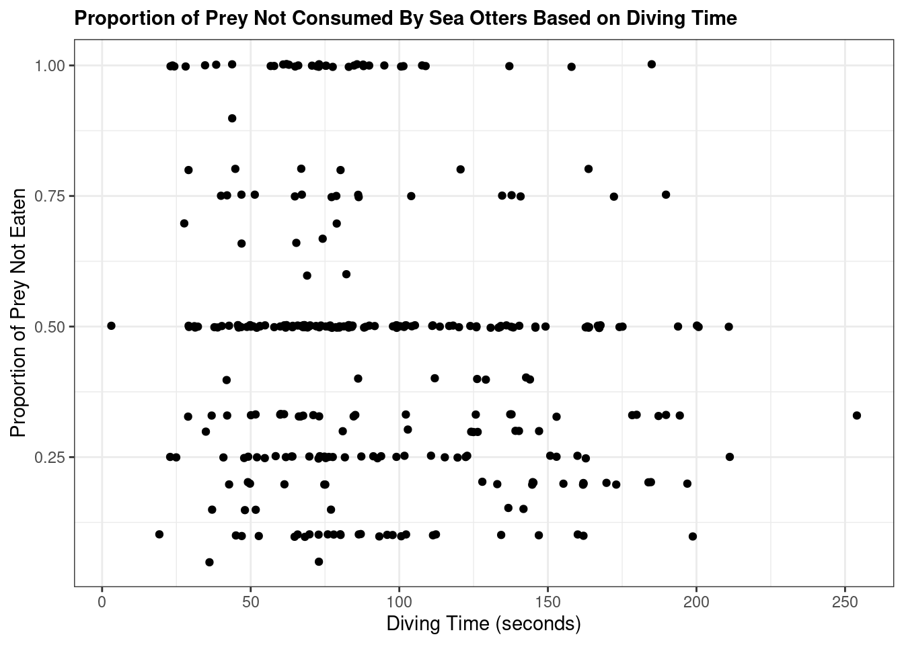
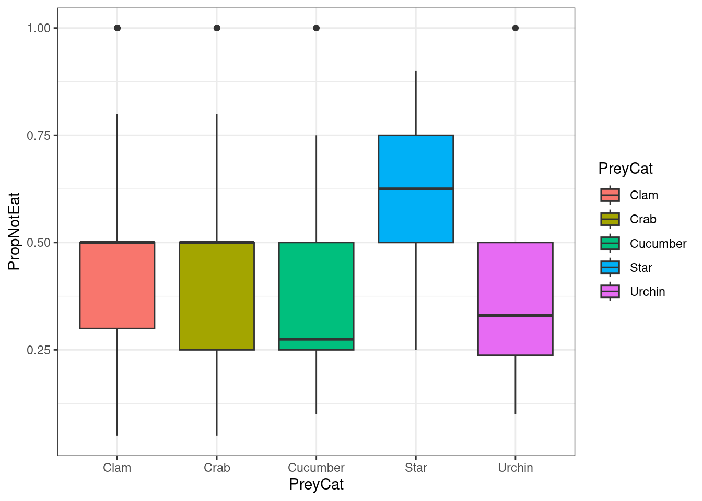

library(here)
library(tidyverse)
library(betareg) # https://cran.r-project.org/web/packages/betareg/vignettes/betareg.html#sec-modelAssessing Sea Otter Feeding Habitats Based on Prey Type and Dive Depth
Purpose
The sea otter () is a highly social aquatic marine mammal that plays a vital role as a keystone species in maintaining the health of kelp forest ecosystems by keeping sea urchin populations in check. While sea otters are primary predators of sea urchins, their diets are shown to be varied. For example, sea otters are known to eat (SOURCE). Because of their important role as a keystone species, understanding their diet and foraging patterns is essential for assessing feeding preferences and food availability in conservation. [ADD DISTRIBUTION].
This blog post aims to present and discuss the results of a statistical regression analysis conducted on sea otter foraging data collected from visual observations in Prince of Wales, Alaska, by LaRoche et al. (2018). A beta regression using betareg with a zero-one adjustment was selected for the analysis in order to assess the proportion of prey not consumed by sea otters during summer 2018. Both the age and sex of observed sea otters were considered as potential confounding variables impacting diving time. The following question was utilized to guide the analysis:
PropNotEaten ~ Beta(α, β)
How do prey categorization and dive depth predict the proportion of prey not eaten?
Hypothesis:
H0: βprey_cat = 0
HA: βprey_cat ≠ 0
Hypothesis:
H0: βdive_time = 0
HA: βdive_time ≠ 0
The blog post provides context and background for the question
The data are explained using text and figures
The relationships and causal relationships are described with a DAG
Data Importation, Exploration, and Cleaning
forage <- read_csv("forage_final.csv")# Structure
str(forage)spc_tbl_ [4,457 × 36] (S3: spec_tbl_df/tbl_df/tbl/data.frame)
$ BoutID : chr [1:4457] "2018-001" "2018-001" "2018-001" "2018-001" ...
$ Study : chr [1:4457] "POW" "POW" "POW" "POW" ...
$ Date : chr [1:4457] "5/6/18" "5/6/18" "5/6/18" "5/6/18" ...
$ BoutStart : 'hms' num [1:4457] 11:24:00 11:24:00 11:24:00 11:24:00 ...
..- attr(*, "units")= chr "secs"
$ BoutEnd : 'hms' num [1:4457] 11:51:00 11:51:00 11:51:00 11:51:00 ...
..- attr(*, "units")= chr "secs"
$ DiveNo : num [1:4457] 1 2 3 4 5 6 7 8 9 10 ...
$ DT : num [1:4457] 76 135 55 52 40 81 58 46 42 12 ...
$ ST : num [1:4457] 33 26 12 21 17 22 60 9 13 30 ...
$ Suc : chr [1:4457] "N" "Y" "Y" "Y" ...
$ HT : num [1:4457] NA 24 12 21 17 NA 60 9 NA 12 ...
$ PreyItem : chr [1:4457] NA "SAG" "CLA" "CLA" ...
$ PreyQty : num [1:4457] NA 1 1 2 1 NA 1 1 NA 1 ...
$ PreySz : chr [1:4457] NA "2A" "1C" "1C" ...
$ PropNotEat : num [1:4457] NA NA NA NA NA NA 0.3 NA NA NA ...
$ Why....Notes...Tool.Use: chr [1:4457] NA NA NA NA ...
$ Region : chr [1:4457] "SHINAKU INLET" "SHINAKU INLET" "SHINAKU INLET" "SHINAKU INLET" ...
$ YEAR : num [1:4457] 2003 2003 2003 2003 2003 ...
$ ObsLatDeg : num [1:4457] 55.6 55.6 55.6 55.6 55.6 ...
$ ObsLongDeg : num [1:4457] -133 -133 -133 -133 -133 ...
$ OtterLatDeg : num [1:4457] 55.6 55.6 55.6 55.6 55.6 ...
$ OtterLongDeg : num [1:4457] -133 -133 -133 -133 -133 ...
$ age : chr [1:4457] "A" "A" "A" "A" ...
$ sex : chr [1:4457] "U" "U" "U" "U" ...
$ pup : chr [1:4457] NA NA NA NA ...
$ where : chr [1:4457] "OW" "OW" "OW" "OW" ...
$ obscond : chr [1:4457] "VG" "VG" "VG" "VG" ...
$ Rain : chr [1:4457] "NONE" "NONE" "NONE" "NONE" ...
$ Sky : num [1:4457] 0 0 0 0 0 0 0 0 0 0 ...
$ observer : chr [1:4457] "NLL" "NLL" "NLL" "NLL" ...
$ recorder : chr [1:4457] "CLD/YBB" "CLD/YBB" "CLD/YBB" "CLD/YBB" ...
$ EnteredBy : chr [1:4457] "NLL" "NLL" "NLL" "NLL" ...
$ checked.by : chr [1:4457] "SLK" "SLK" "SLK" "SLK" ...
$ PreyCat : chr [1:4457] NA "Clam" "Clam" "Clam" ...
$ Occupation : chr [1:4457] "15 years" "15 years" "15 years" "15 years" ...
$ julian : num [1:4457] 126 126 126 126 126 126 126 126 126 126 ...
$ Season : chr [1:4457] "Spring" "Spring" "Spring" "Spring" ...
- attr(*, "spec")=
.. cols(
.. BoutID = col_character(),
.. Study = col_character(),
.. Date = col_character(),
.. BoutStart = col_time(format = ""),
.. BoutEnd = col_time(format = ""),
.. DiveNo = col_double(),
.. DT = col_double(),
.. ST = col_double(),
.. Suc = col_character(),
.. HT = col_double(),
.. PreyItem = col_character(),
.. PreyQty = col_double(),
.. PreySz = col_character(),
.. PropNotEat = col_double(),
.. Why....Notes...Tool.Use = col_character(),
.. Region = col_character(),
.. YEAR = col_double(),
.. ObsLatDeg = col_double(),
.. ObsLongDeg = col_double(),
.. OtterLatDeg = col_double(),
.. OtterLongDeg = col_double(),
.. age = col_character(),
.. sex = col_character(),
.. pup = col_character(),
.. where = col_character(),
.. obscond = col_character(),
.. Rain = col_character(),
.. Sky = col_double(),
.. observer = col_character(),
.. recorder = col_character(),
.. EnteredBy = col_character(),
.. checked.by = col_character(),
.. PreyCat = col_character(),
.. Occupation = col_character(),
.. julian = col_double(),
.. Season = col_character()
.. )
- attr(*, "problems")=<externalptr> ## drop NAs
colSums(is.na(forage)) BoutID Study Date
0 0 0
BoutStart BoutEnd DiveNo
0 0 0
DT ST Suc
7 118 4
HT PreyItem PreyQty
641 480 484
PreySz PropNotEat Why....Notes...Tool.Use
484 4033 3049
Region YEAR ObsLatDeg
0 0 0
ObsLongDeg OtterLatDeg OtterLongDeg
0 0 0
age sex pup
0 0 3343
where obscond Rain
19 0 0
Sky observer recorder
0 0 0
EnteredBy checked.by PreyCat
0 28 1541
Occupation julian Season
0 0 0 # Select for just prey category, diving time, and prey handling time
forage <- forage %>% select(BoutID, PreyCat, PreyItem, DT, HT,PropNotEat, age, sex)
forage <- forage %>% drop_na()# Check the colSums... were they all dropped?
colSums(is.na(forage)) BoutID PreyCat PreyItem DT HT PropNotEat age
0 0 0 0 0 0 0
sex
0 # Create a scatterplot of dive time related to the proportion of prey not eaten based on prey category
forage %>% ggplot(aes(x = DT, y = PropNotEat))+ geom_jitter() + theme_bw() + #+ scale_color_discrete(palette = "Set2") +
# #facet_wrap(~PreyCat, scale = "free") +
#theme(legend.position = "none") +
labs(x = "Diving Time (seconds)", y = "Proportion of Prey Not Eaten",
title = "Proportion of Prey Not Consumed By Sea Otters Based on Diving Time") + theme(plot.title = element_text(size = 11, face = "bold"))
# Create boxplots to visualize the distribution of prey categories and proportion of prey not eaten
forage %>% ggplot(aes(x = PreyCat, y = PropNotEat, fill = PreyCat)) + geom_boxplot() + theme_bw()
Statistical model
What are the assumptions?
betareg(formula, data, subset, na.action, weights, offset, link = "logit", link.phi = NULL, control = betareg.control(...), model = TRUE, y = TRUE, x = FALSE, ...)
# Beta does not take direct 0 and 1! need to do adjustment to offset before 1 and after 0 ()
forage <- forage %>%
mutate(PropNotEat_adj = # Transformation to adjust (betareg cranr)
(PropNotEat * (nrow(.) - 1) + 0.5) / nrow(.))# Simple beta regression
forage_beta <- betareg(PropNotEat_adj ~ PreyCat + DT , data = forage)Warning in betareg.fit(X, Y, Z, weights, offset, link, link.phi, type, control,
: no valid starting value for precision parameter found, using 1 insteadsummary(forage_beta)
Call:
betareg(formula = PropNotEat_adj ~ PreyCat + DT, data = forage)
Quantile residuals:
Min 1Q Median 3Q Max
-1.8258 -0.6825 -0.2732 0.1037 2.9508
Coefficients (mean model with logit link):
Estimate Std. Error z value Pr(>|z|)
(Intercept) 0.666461 0.166919 3.993 6.53e-05 ***
PreyCatCrab -0.221985 0.162812 -1.363 0.17274
PreyCatCucumber -0.453560 0.231288 -1.961 0.04988 *
PreyCatStar -0.019614 0.471734 -0.042 0.96684
PreyCatUrchin -0.188888 0.340098 -0.555 0.57863
DT -0.004528 0.001461 -3.099 0.00194 **
Phi coefficients (precision model with identity link):
Estimate Std. Error z value Pr(>|z|)
(phi) 1.7834 0.1193 14.95 <2e-16 ***
---
Signif. codes: 0 '***' 0.001 '**' 0.01 '*' 0.05 '.' 0.1 ' ' 1
Type of estimator: ML (maximum likelihood)
Log-likelihood: 12.39 on 7 Df
Pseudo R-squared: 0.0318
Number of iterations: 15 (BFGS) + 1 (Fisher scoring) # Control variable/additional variable inclusion beta regression
forage_beta_2 <- betareg(PropNotEat_adj ~ PreyCat + DT + age + sex, data = forage)
summary(forage_beta_2)
Call:
betareg(formula = PropNotEat_adj ~ PreyCat + DT + age + sex, data = forage)
Quantile residuals:
Min 1Q Median 3Q Max
-1.8216 -0.6707 -0.2389 0.1291 3.1601
Coefficients (mean model with logit link):
Estimate Std. Error z value Pr(>|z|)
(Intercept) 0.580030 0.166048 3.493 0.000477 ***
PreyCatCrab -0.173367 0.160902 -1.077 0.281271
PreyCatCucumber -0.484978 0.229101 -2.117 0.034270 *
PreyCatStar -0.519349 0.488573 -1.063 0.287787
PreyCatUrchin -0.128846 0.335449 -0.384 0.700903
DT -0.004342 0.001447 -3.001 0.002690 **
ageJ -0.088674 0.902334 -0.098 0.921716
ageU -1.175654 0.590683 -1.990 0.046555 *
sexM 0.212581 0.433580 0.490 0.623926
sexU 1.688048 0.441985 3.819 0.000134 ***
Phi coefficients (precision model with identity link):
Estimate Std. Error z value Pr(>|z|)
(phi) 1.8924 0.1278 14.81 <2e-16 ***
---
Signif. codes: 0 '***' 0.001 '**' 0.01 '*' 0.05 '.' 0.1 ' ' 1
Type of estimator: ML (maximum likelihood)
Log-likelihood: 22.67 on 11 Df
Pseudo R-squared: 0.1
Number of iterations: 37 (BFGS) + 2 (Fisher scoring) # Model with interaction
forage_interaction <- betareg(PropNotEat_adj ~ PreyCat * DT + age + sex, data = forage)
summary(forage_interaction)
Call:
betareg(formula = PropNotEat_adj ~ PreyCat * DT + age + sex, data = forage)
Quantile residuals:
Min 1Q Median 3Q Max
-1.8229 -0.6736 -0.2399 0.1505 3.1468
Coefficients (mean model with logit link):
Estimate Std. Error z value Pr(>|z|)
(Intercept) 5.771e-01 1.941e-01 2.973 0.002949 **
PreyCatCrab -1.731e-01 3.407e-01 -0.508 0.611346
PreyCatCucumber -7.835e-01 7.055e-01 -1.111 0.266777
PreyCatStar -7.752e-01 1.055e+00 -0.735 0.462616
PreyCatUrchin 2.736e-01 8.594e-01 0.318 0.750192
DT -4.315e-03 1.771e-03 -2.437 0.014821 *
ageJ -7.924e-02 9.050e-01 -0.088 0.930226
ageU -1.155e+00 5.967e-01 -1.935 0.052945 .
sexM 2.050e-01 4.382e-01 0.468 0.639889
sexU 1.690e+00 4.429e-01 3.816 0.000136 ***
PreyCatCrab:DT -4.103e-06 3.497e-03 -0.001 0.999064
PreyCatCucumber:DT 3.664e-03 8.127e-03 0.451 0.652095
PreyCatStar:DT 3.812e-03 1.269e-02 0.300 0.763918
PreyCatUrchin:DT -3.227e-03 6.282e-03 -0.514 0.607444
Phi coefficients (precision model with identity link):
Estimate Std. Error z value Pr(>|z|)
(phi) 1.8964 0.1281 14.8 <2e-16 ***
---
Signif. codes: 0 '***' 0.001 '**' 0.01 '*' 0.05 '.' 0.1 ' ' 1
Type of estimator: ML (maximum likelihood)
Log-likelihood: 22.98 on 15 Df
Pseudo R-squared: 0.101
Number of iterations: 30 (BFGS) + 2 (Fisher scoring) # Compare models (lowest AIC)
AIC(forage_beta, forage_beta_2, forage_interaction) df AIC
forage_beta 7 -10.78578
forage_beta_2 11 -23.34871
forage_interaction 15 -15.95447The statistical model is explained conceptually and using formal statistical notation
The blog post demonstrates how to simulate data according to model assumptions (predictions)
The blog post demonstrates that a model fit to the simulated data recovers the parameters
Inference
Hypotheses are stated in plain language and with visualizations
Model estimates are presented with appropriate uncertainty (e.g., confidence intervals)
A hypothesis is tested and the evidence is interpreted
Professionalism
The overall appearance of the blog post (e.g., figures, code outputs) is portfolio-quality
The writing is comprehensible to a technical audience
The code is well-organized and appropriately documented